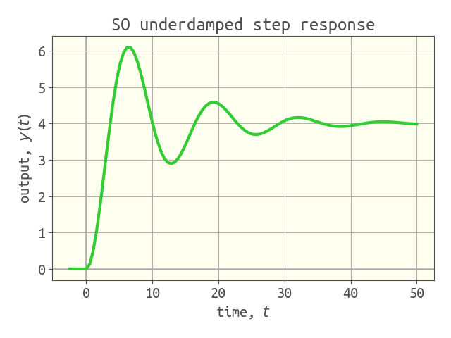

Simulation
we wish simulate to simulate the response (output) of a linear, time-invariant system, characterized by a transfer function $g(s)$, to an input. we run the simulation in the familiar time domain by converting the system into state space and using DifferentialEquations.jl (see here) to solve the resulting ODE.
learn by example! in each case, simulate returns an array of times t and corresponding output values, y.
response of an underdamped second-order system to a unit step input
g = 4 / (4 * s ^ 2 + 0.8 * s + 1) # construct transfer function
u = 1 / s # unit step input
Y = g * u # system output
t, y = simulate(Y, (0.0, 50.0)) # simulate from t = 0 to t = 50we can then plot the y array versus the t array:

Controlz.simulate — Functiont, y = simulate(tf, u, tspan, nb_time_points=100) # explicit input function u(t)
t, y = simulate(Y, tspan, nb_time_points=100) # invert Y(s)Simulate the output $y(t)$ of an LTI system. simulate handles two scenarios:
- we have the transfer function
tfthat characterizes how the LTI system responds to inputs and an input functionu, an explicit function of time $u(t)$. - we have the Laplace transform of the output, $Y(s)$,
Y.
Arguments
tf::TransferFunction: the transfer function describing the relationship between inputuand outputyY::TransferFunction: the Laplace transform of the output $y(t)$. Usually formed by $g(s)U(s)$, where $U(s)$ is the Laplace transform of the input.u::Function: the input function u(t)tspan::Tuple{Float64, Float64}: the time span over which to simulate the LTI system.nb_time_points::Int=100: the number of time points at which to save the solution $y(t)$
Returns
t::Array{Float64, 1}: array of times $t$ at which the solution was savedy::Array{Float64, 1}: array of $y$ values at corresponding times int
Example
Ex. 1: given transfer function tf and input function u
One can simulate the first order step response as:
julia> tf = 4 / (3 * s + 1)
julia> u(t) = (t < 0.0) ? 0.0 : 1.0
julia> t, y = simulate(tf, u, (0.0, 12.0))Ex. 2: given Laplace transform of the output, Y
One can also simulate the first order step response as:
julia> tf = 4 / (3 * s + 1)
julia> Y = tf / s
julia> t, y = simulate(Y, (0.0, 12.0))